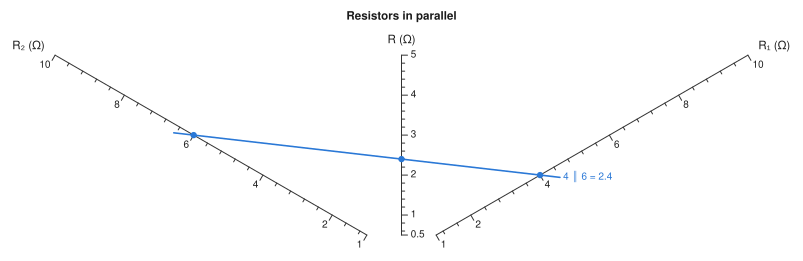
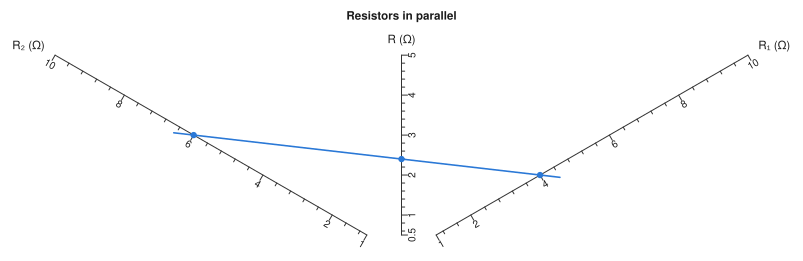
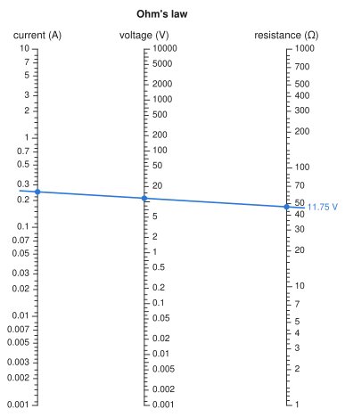
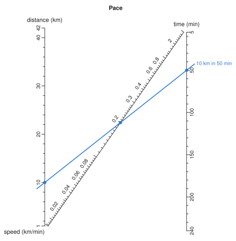
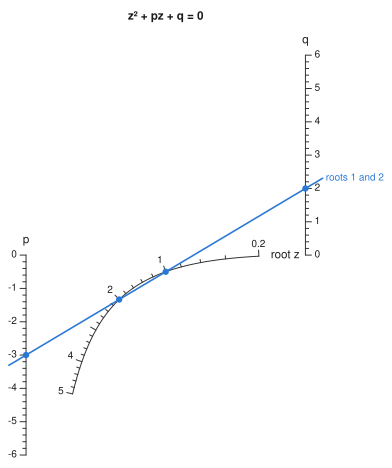
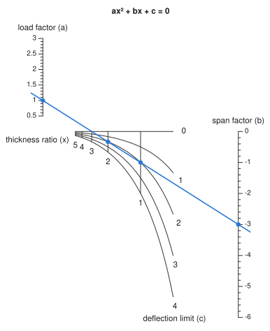
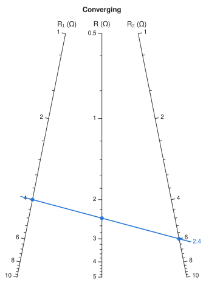
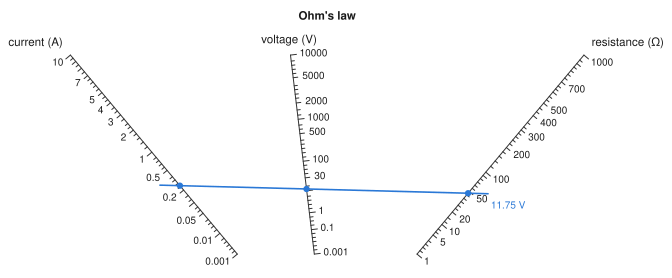
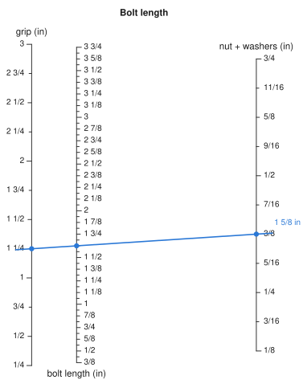
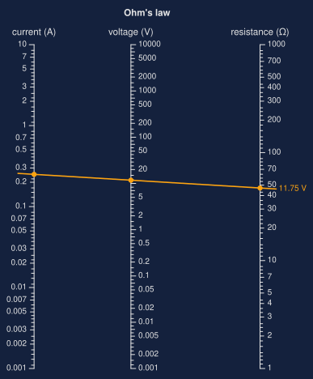

Gallery#
This page first builds a chart by hand from plain curves, then shows a range of other charts, each with the code that draws it.
A chart built piece by piece#
Every chart in this package is a set of Scales: curves that take a value to a point on the page. The constructions, such as additive_nomogram, work out those curves for you. You can also write them yourself, and the result solves, checks and draws like any other chart.
Here is a classic chart that none of the constructions produces. Take three straight scales radiating from one point at 30°, 90° and 150°, each graduated evenly with the same unit. A line through a on one outer scale and b on the other crosses the middle scale at c, where
This is the formula for resistors in parallel, or the thin-lens formula, read from evenly spaced scales. (For points at distances \(r_i\) along lines through one point at angles \(\theta_i\), collinearity is \(\sum \sin(\theta_j - \theta_k)/r_i = 0\) over the three cyclic permutations; at these angles that is the relation above.)
1. The variables. Each input needs a domain. The result's range follows from the geometry, and here \(c\) runs from 0.5 to 5:
using Nomograms
va = Variable(:a; domain = (1, 10), label = "R₁ (Ω)")
vb = Variable(:b; domain = (1, 10), label = "R₂ (Ω)")
vc = Variable(:c; domain = (0.5, 5), label = "R (Ω)")2. The scales. A Scale is a variable, its domain, a curve value -> (x, y), and the side its labels go on. Each ray here has ten chart units per ohm, and the centre is placed so that the chart sits at the left of its canvas:
centre = (90.0, 0.0)
ray(θ) = r -> (centre[1] + 10r * cosd(θ), centre[2] + 10r * sind(θ))
scales = [
Scale(va, (1, 10), ray(30), :right), # labels below the right-hand ray
Scale(vb, (1, 10), ray(150), :left), # and below the left-hand one
Scale(vc, (0.5, 5), ray(90), :right),
]3. The chart. Give the scales a canvas and, optionally, the relation they encode, as a function that is zero on every solution:
star = Nomogram(
scales;
width = 180,
height = 100,
title = "Resistors in parallel",
relation = (a, b, c) -> 1 / a + 1 / b - 1 / c,
)4. Check it. The package derived none of this, so check that the geometry encodes the relation. max_relation_residual solves the chart over a grid of inputs and measures each answer against relation:
max_relation_residual(star)6.661338147750939e-16evaluate(star; a = 4, b = 6)(a = 4.0, b = 6.0, c = 2.4)5. Draw it, with a reading:
drawing(star; isopleths = [isopleth(star; a = 4, b = 6, label = "4 ∥ 6 = 2.4")])
6. Style it. A NomogramStyle controls how everything is drawn. Here the tick labels are turned to run along their scales:
style = NomogramStyle(; ticklabelrotation = :tangent)
drawing(star; style, isopleths = [isopleth(star; a = 4, b = 6)])
To save it, use save_svg("star.svg", star; style), or nomogramplot(star; style) for a Makie figure. The same steps build any chart you can describe as curves. The determinant method is a systematic way to find the curves.
Logarithmic scales#
The most common nomogram is a product, drawn on three parallel logarithmic scales by multiplicative_nomogram. This one is Ohm's law, with current from 1 mA to 10 A:
using Nomograms
ohm = multiplicative_nomogram(
Variable(:I; domain = (0.001, 10), label = "current (A)"),
Variable(:R; domain = (1, 1000), label = "resistance (Ω)"),
Variable(:V; label = "voltage (V)");
title = "Ohm's law",
)
drawing(ohm; isopleths = [isopleth(ohm; I = 0.25, R = 47, label = "11.75 V")])
An N-chart#
ratio_nomogram joins two parallel scales with a diagonal. The outer scales stay linear, and here the labels on the diagonal are turned to run along it:
pace = ratio_nomogram(
Variable(:distance; domain = (1, 42), label = "distance (km)"),
Variable(:time; domain = (5, 240), label = "time (min)"),
Variable(:speed; label = "speed (km/min)");
title = "Pace",
)
drawing(
pace;
style = NomogramStyle(; ticklabelrotation = :tangent),
isopleths = [isopleth(pace; distance = 10, time = 50, label = "10 km in 50 min")],
)
A curved scale#
Some relations need a curved scale. The roots of \(z^2 + pz + q = 0\) lie on one, and a line through \(p\) and \(q\) crosses it once for each positive root:
roots = determinant_nomogram(
Variable(:p; domain = (-6, 0), label = "p") => p -> (0.0, p),
Variable(:q; domain = (0, 6), label = "q") => q -> (1.0, q),
Variable(:z; domain = (0.2, 5), label = "root z") => z -> (1 / (1 + z), -z^2 / (1 + z));
relation = (p, q, z) -> z^2 + p * z + q,
title = "z² + pz + q = 0",
)
drawing(roots; isopleths = [isopleth(roots; p = -3, q = 2, label = "roots 1 and 2")])
A net#
When two variables have to share one point, that point lies on a Net: two families of curves, each named past the end of its row of values.
timber = net_nomogram(
Net(
Variable(:x; domain = (0.5, 5.0), label = "thickness ratio (x)"),
Variable(:c; domain = (0.0, 4.0), label = "deflection limit (c)"),
(x, c) -> (1 / (1 + x), -c / (x * (1 + x))),
),
Variable(:a; domain = (0.5, 3.0), label = "load factor (a)") => a -> (0.0, a),
Variable(:b; domain = (-6.0, 0.0), label = "span factor (b)") => b -> (1.0, b);
relation = (x, c, a, b) -> a * x^2 + b * x + c,
title = "ax² + bx + c = 0",
)
drawing(timber; isopleths = [isopleth(timber; a = 1, b = -3, c = 2)])
A chain#
Three inputs need two alignment lines with an unmarked turning line between them. auto_nomogram finds the chain from the formula. This example uses units, so the pressure comes out in kPa whatever units the inputs are given in:
using Unitful
R = 8.314u"J/(mol*K)"
gas = auto_nomogram(
(n, T, V) -> n * R * T / V,
Variable(:n; domain = (0.5u"mol", 5u"mol"), label = "amount"),
Variable(:T; domain = (250u"K", 400u"K"), label = "temperature"),
Variable(:V; domain = (10u"L", 100u"L"), label = "volume"),
Variable(:P; unit = u"kPa", label = "pressure");
title = "Ideal gas",
)
drawing(gas; isopleths = isopleth(gas; n = 1u"mol", T = 300u"K", V = 24u"L", label = "104 kPa"))
Converging scales#
A projective map keeps straight lines straight, so it can reshape a chart without changing its answers. project takes the corners of the canvas and where they should go:
parallel = additive_nomogram(
Variable(:R1, ReciprocalScale(); domain = (1, 10), label = "R₁ (Ω)"),
Variable(:R2, ReciprocalScale(); domain = (1, 10), label = "R₂ (Ω)"),
Variable(:R, ReciprocalScale(); label = "R (Ω)");
title = "Converging",
)
corners = [(0, 0), (70, 0), (70, 100), (0, 100)]
converging = project(parallel, corners => [(0, 0), (70, 0), (50, 100), (20, 100)])
drawing(converging; isopleths = [isopleth(converging; R1 = 4, R2 = 6, label = "2.4")])
A fan#
Take the same idea further, until the scales meet at a point beyond the chart, and they become spokes. fan does this for any chart, including compound ones:
fanned = fan(ohm; spread = 80)
drawing(fanned; isopleths = [isopleth(fanned; I = 0.25, R = 47, label = "11.75 V")])
A ruler#
Fraction ticks are graded by importance, as on a ruler: wholes are longest, then halves, quarters, eighths and sixteenths. Writing the domains as Rationals turns them on:
bolt = additive_nomogram(
Variable(:grip; domain = (1//4, 3), label = "grip (in)"),
Variable(:nut; domain = (1//8, 3//4), maxden = 16, label = "nut + washers (in)"),
Variable(:length; tickstyle = :fraction, label = "bolt length (in)");
title = "Bolt length",
)
drawing(bolt; isopleths = [isopleth(bolt; grip = 1 + 1//4, nut = 3//8, label = "1 5/8 in")])
Colours#
svg accepts colours for the background, axes, text and reading lines, so a chart can match the colour scheme of the page it appears on:

dark = svg(
ohm;
isopleths = [isopleth(ohm; I = 0.25, R = 47, label = "11.75 V")],
background = "#14213d",
axiscolor = "#e5e5e5",
textcolor = "#e5e5e5",
isoplethcolors = ("#fca311",),
)